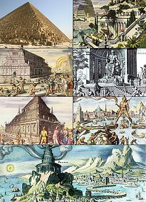
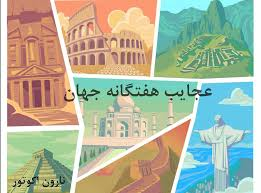
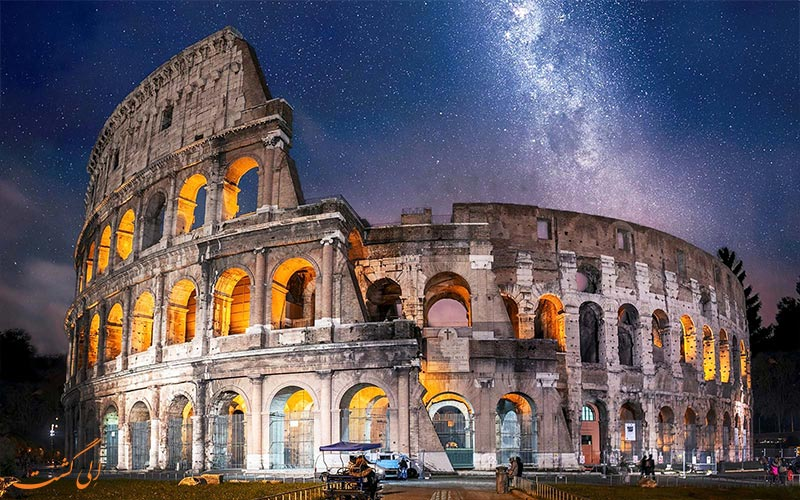
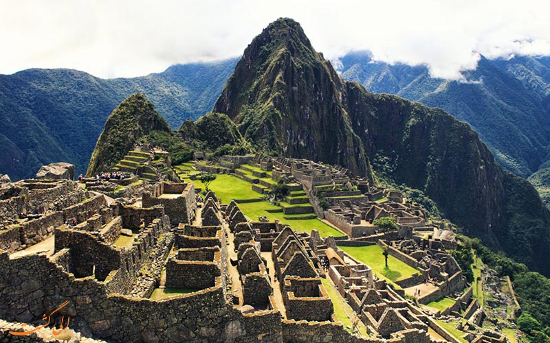
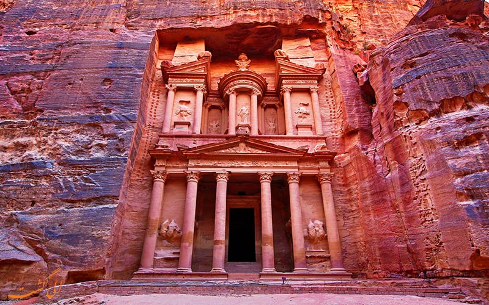
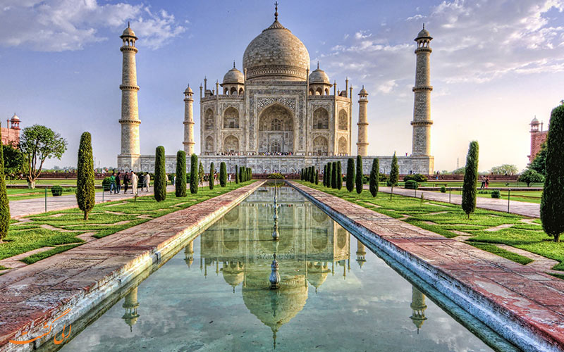
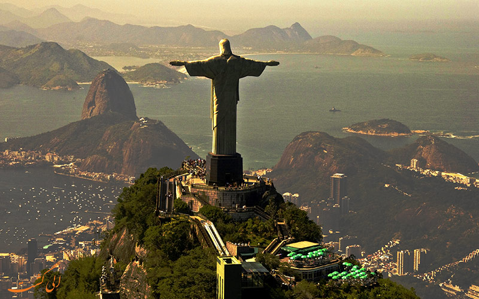
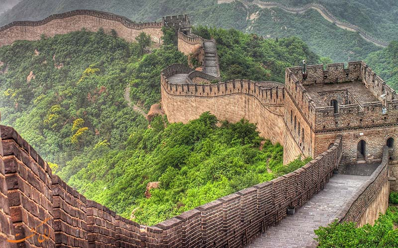
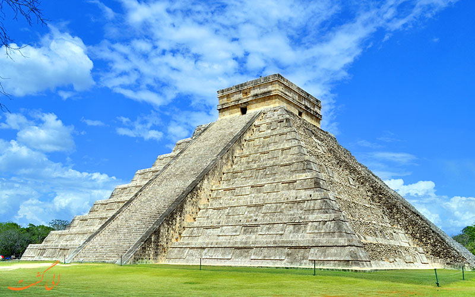

|  |
عجایب هفتگانه |
 |
|
شروع عجایب هفتاگانه
|
| در سال ۲۰۰۱ سازمانی به نام بنیاد عجایب هفت گانه جدید از مردم سؤال کرد، کدام یک از عجایب جهان را در لیست جدید قرار می دهید. میلیون ها نفر به این سؤال پاسخ دادند و اغلب پاسخ ها قدیمی تر از آن چه تصور می کنید بود. سرانجام پس از انجام بررسی ها در سال ۲۰۰۷ لیست نهایی اعلام شد. |
|
|  |
سازه ای باستانی است که در کتاب گینس نیز اسم آن به عنوان بزرگ ترین آمفی تئاتر جهان ثبت شده است. ظرفیت آن بین ۵۰۰۰ تا ۸۰۰۰ نفر بود و ۸۰ در ورودی داشت. ساخت کلوسئوم در سال ۸۰ بعد از میلادی مسیح به اتمام رسید و اولین آمفی تئاتر دائمی رم شد. هر چند امروزه اکثر مردم جهان آن را با تاریخ خونین گلادیاتورها می شناسند. این بنا در شهر رم کشور ایتالیا قرار دارد. |
(colosseum)کولوسئوم |
|  |
این بنا در کشور پرو قرار دارد.
ماچو پیچو(شهر گمشده اینکاها) در قرن ۱۵ میلادی برای امپراطور اینکاها ساخته شد. پس از گذشت ۱۰۰ سال و در پی شکست اینکاها مقابل اسپانیا متروکه شد.
به دلیل ارتفاع زیاد (۲۴۳۰ متر بالاتر از سطح دریا) و فاصله ۸۰ کیلومتری با کوسکو، پایتخت اینکاها از دست حملات جنگ جان سالم به در برد و ویران نشد.
سرانجام در سال ۱۹۱۱ یک تاریخ شناس آمریکایی موفق شد آن را به جهان معرفی کند.
|
(Machu Picchu)ماچو پیچو |
|  |
پترا شهر تاریخی جنوب عمان که روزگاری پایتخت نبطی ها بوده است.
ساخت این بنا به وسعت ۲۶۴ کیلومتر مربع در سال ۳۱۲ قبل از میلاد مسیح کامل شد.
این مورد از عجایب هفت گانه جدید آن قدر قدیمی است که می توانست درلیست قیمی نیز جای بگیرد.
این شهر عظیم کاملا در دل کوه ها قرار گرفته است. معنی نام آن به زبان یونانی صخره است.
سنگ هایی که شهر در آن قرار گرفته است، سرخ رنگ یا صورتی رنگ هستند.
نام اصی شهر سلع بوده که رومیان نامش را به زبان خود ترجمه کردند.
|
(petra)پترا |
|  |
آرامگاهی با شکوه و دیدنی که در سال ۱۶۴۷ میلادی ساختش تکمیل شد.
این بنا به دستور شاه جهان، پنجمین امپراتور گورکانی هند برای یاد بود همسر ایرانیش، ارجمند بانو بیگم مشهور به ممتاز محل که در سال ۱۶۳۲میلادی در سفری جنگی هنگام وضع حمل فوت کرد ساخته شد. شاه جهان نیز پس از فوتش همان جا دفن شد.
جالب آن جاست که از زندگی مشترک ممتاز محل و شاه جهان ۱۸ سال می گذشت و آن ها ۱۴ فرزند داشتند. ۷ فرزند آن ها زنده ماندند.
ممتاز محل که در هنگام مرگ تنها ۳۹ سال سن داشت، از همسرش خواست بعد از مرگش ازدواج نکند و این آرامگاه را برایش بسازد.
|
(taj mahal)تاج محل |
| 
| این تندیس جوان ترین بنا در لیست عجایب هفت گانه جدید جهان است.
ارتفاع این سازه خیلی بزرگ ۳۹.۶ متر و طول دستانش ۲۸ متر است.
امرزوه به نمادی از شهر ریو در کشور برزیل تبدیل شده است.
مجسمه در قله ی ۷۱۰ متری کوه کورکووادو ساخته شده است.
این تندیس ۶۳۵ تنی در سال ۱۹۳۱ میلادی ساخته شد.
ایده ساخت مجسمه بر بالای کوه کوکووادو اولین بار در اواسط دهه۱۸۵۰ میلادی مطرح شد.
|
(cristo redentor)تندیس حضرت مسیح |
| 
| این دیوار بزرگ ترین و طولانی ترین دیوار جهان است.
ساخت دیوار بین قرن های پنجم تا هشتم قبل از میلاد مسیح آغاز شد.
هدف از ساخت آن محافظت از مرزهای کشور در مقابل حملات دشمنان بود.
در میان این دیوارها برج های آتش و قلعه های مرزی نیز ساخته شده است.
در این سال ها دوک های مختلف دیوارهای مختلفی را می ساختند تا این که در سال ۲۲۱
پیش از میلاد امپراطور آن ها را به وحدت رساند و دیوارها به یکدیگر متصل شدند.
امروزه این دیوار ۷۳۰۰ کیلومتر طول دارد.
ارتفاع دیوار به ۱۰ متر می رسد.
دیوار چین تجسم درایت و رنج و زحمت میلیونها چینی در دوره باستان چین است. |
(hreat wall of china)دیوار بزرگ چین |
|  |
این هرم مایایی چند صد سال قبل از این که کریستف کلمب موفق به کشف قاره آمریکا شود ساخته شده بود.
معنی لغوی نام آن در کنار دهانه چاه ایتزا (ایتزا در زبان مایایی یعنی جادویی) است.
باستان شناسان معتقد هستند قدمت آن به ۱۰۰۰ سال پیش بر می گردد .
شهر چیچن ایتزا در آن زمان پایتخت یکی از پادشاهان مایاها بوده است. این اثر که امروزه در کشور مکزیک قرار دارد |
(Chichén Itzá)چیچن ایتزا |
|
برای اطلاعات بیشتر به زبان انگلیسی روی
این کلمه
کلیک کنید.
|